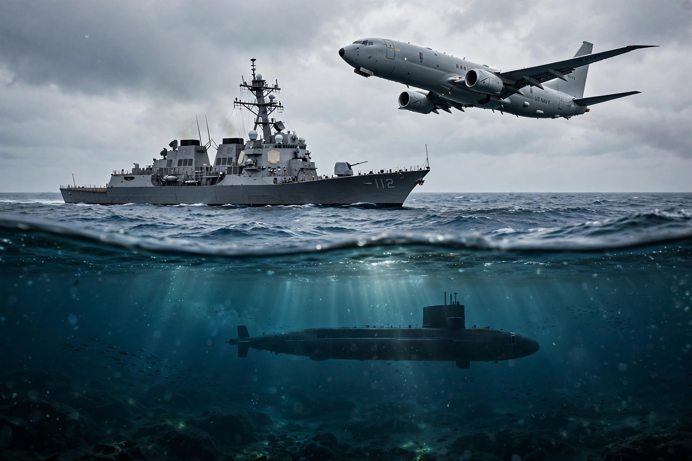

Anti-submarine warfare (ASW) is a branch of underwater warfare that uses surface warships, aircraft, submarines, and other platforms to find, track, deter, damage, or destroy enemy submarines. Operations typically proceed through the stages of detection, classification, tracking, and attack.
ASW emerged as a major discipline in the First World War in response to German U-boat attacks on merchant shipping; early measures included convoys, depth charges, hydrophones, and the first active sonar (ASDIC). In the Second World War the Battle of the Atlantic saw the integration of radar, high-frequency direction finding, escort carriers, long-range patrol aircraft, signals intelligence, and improved weapons such as the Hedgehog mortar and homing torpedoes.
During the Cold War, the threat of Soviet ballistic-missile and attack submarines drove the deployment of fixed seabed listening networks such as SOSUS, maritime patrol aircraft like the P-3 Orion, and quiet nuclear attack submarines tasked with trailing enemy boats.
Detection relies chiefly on acoustics: passive and active sonar, sonobuoys dropped by aircraft, towed arrays, and magnetic anomaly detectors. Weapons include depth charges, lightweight and heavyweight torpedoes (often acoustically homing), ASW missiles that deliver torpedoes at range, and naval mines. Modern ASW platforms include frigates and destroyers with embarked helicopters, maritime patrol aircraft such as the P-8 Poseidon, and attack submarines.